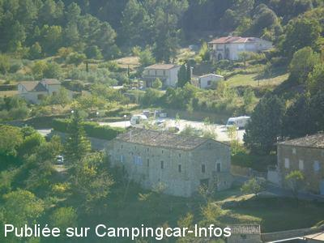
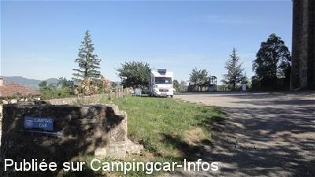
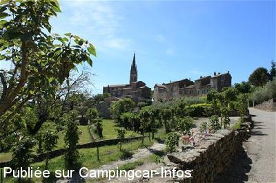
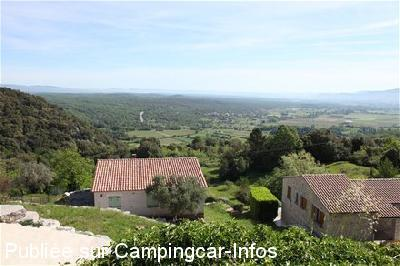
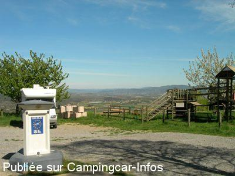
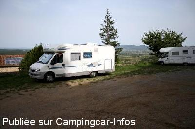

ASN = Aire de services avec stationnement nuit possible de :
BANNE
(N° 837)
Accès/adresse :
L'Église
07460 BANNE
07460 BANNE
Latitude : (Nord) 44.36541° Décimaux ou 44° 21′ 55′′
Longitude : (Est) 4.15676° Décimaux ou 4° 9′ 24′′
Tarif : 2015
Stationnement gratuit
Eau ou 1 h d'électricité : 3 €
Jetons à la mairie
Point Information
Magasin de produits régionaux
Type de borne : EURO-RELAIS
Services :


Ferme Auberge
Petits commerces à 3 Km
Autres informations :
Ouvert toute l'année
20 emplacements
Tél: +33(0)475 398 718
http://www.banne.fr

Le 03/01/2014 par DIDI 31

Le 14/05/2012 par JPB 73

Le 14/05/2012 par JPB 73

Le 14/05/2012 par JPB 73

Le 10/04/2011 par guy83

Le 15/09/2008 par marc
de
pierre
le 01/09/2013 :
tres bien paysage superbe village a voir
tres bien paysage superbe village a voir
de
marion
le 16/08/2012 :
escale sur cette aire pour une nuit(du 26 au 27/07/2012)et passage le 15/08/2012).Endroit calme(les cloches ne sont pas un probléme,elles ne sonne pas fort)par contre la borne est toujours en panne,pas d'eau,mais certains vidange quand méme,j'ai versé 10L de ma reserve pour rincer bien que je ne l'ai pas utilisé...merci a cette petite commune.
bruno
escale sur cette aire pour une nuit(du 26 au 27/07/2012)et passage le 15/08/2012).Endroit calme(les cloches ne sont pas un probléme,elles ne sonne pas fort)par contre la borne est toujours en panne,pas d'eau,mais certains vidange quand méme,j'ai versé 10L de ma reserve pour rincer bien que je ne l'ai pas utilisé...merci a cette petite commune.
bruno
de
Fab & Nat
le 14/07/2012 :
Belle aire qui mérite d'exister, vue magnifique, calme malgré les cloches, mais ces dernieres ne nous ont pas empéché de bien dormir.
Belle aire qui mérite d'exister, vue magnifique, calme malgré les cloches, mais ces dernieres ne nous ont pas empéché de bien dormir.
de
JPB 73
le 14/05/2012 :
Aire magnifique avec un accès comportant qques étroitures (interdit aux plus de 8,00 m)quel bon air et quel panorama ! quant aux cloches tout est relatif moi je les adore elles me rappellent ma jeunesse et l'auberge est classe, La borne marchait mais avec un petit débit d'eau. Sommes restés 2 nuits ; le samedi soir forte affluence et le charme a été un peu rompu
Aire magnifique avec un accès comportant qques étroitures (interdit aux plus de 8,00 m)quel bon air et quel panorama ! quant aux cloches tout est relatif moi je les adore elles me rappellent ma jeunesse et l'auberge est classe, La borne marchait mais avec un petit débit d'eau. Sommes restés 2 nuits ; le samedi soir forte affluence et le charme a été un peu rompu
de
clou
le 12/05/2012 :
ok avec les commentaires précédents sur le village et l'aire mais qui dit place de l'église dit cloches !! elles ont sonnées toutes les 1/2 h et toute la nuit : on est restés qu'une nuit : c'est peut être une nouvelle méthode pour éviter les cc ventouses !!
ok avec les commentaires précédents sur le village et l'aire mais qui dit place de l'église dit cloches !! elles ont sonnées toutes les 1/2 h et toute la nuit : on est restés qu'une nuit : c'est peut être une nouvelle méthode pour éviter les cc ventouses !!
de
JEAN MARIE
le 20/10/2011 :
Derrière l'église, perché en haut d'un village typique de l'Ardèche: panorama somptueux sur 360°. Visiter le château et ses immenses écuries restaurées, flâner dans les rues du village.
A ne pas manquer: la promenade vers Brahic, petite route à flanc de coteau vers un village bâti en schiste noir très pittoresque. Le bois de Païolive et pour repartir, la route vers le col du pendu (D10, D 403). Panorama sublime.
Derrière l'église, perché en haut d'un village typique de l'Ardèche: panorama somptueux sur 360°. Visiter le château et ses immenses écuries restaurées, flâner dans les rues du village.
A ne pas manquer: la promenade vers Brahic, petite route à flanc de coteau vers un village bâti en schiste noir très pittoresque. Le bois de Païolive et pour repartir, la route vers le col du pendu (D10, D 403). Panorama sublime.
de
Pat53
le 01/01/2011 :
De passage, l'aire est calme, bien située pour des randonnées, pas très loin du bois de Païolive (circuits de 1h ou 1h30 ou 2h). Je confirme que la boucherie de Saint-Paul le Jeune vaut le détour. Par contre, la borne n'était pas utilisable à cause d'une fuite.
De passage, l'aire est calme, bien située pour des randonnées, pas très loin du bois de Païolive (circuits de 1h ou 1h30 ou 2h). Je confirme que la boucherie de Saint-Paul le Jeune vaut le détour. Par contre, la borne n'était pas utilisable à cause d'une fuite.
de
P G
le 25/02/2010 :
A delightful small aires behind the local church. Space for 4 vans on hard standing but not suitable for vans over 7 mt. Free parking with a grey water dump but the black waste was u/s at the time of our visit (08). We walked around the village but could not find any shops, but it was a short overnight stop. The nearest supermarket is at Ruoms about 20km. Nice stop and had some stunning views.
A delightful small aires behind the local church. Space for 4 vans on hard standing but not suitable for vans over 7 mt. Free parking with a grey water dump but the black waste was u/s at the time of our visit (08). We walked around the village but could not find any shops, but it was a short overnight stop. The nearest supermarket is at Ruoms about 20km. Nice stop and had some stunning views.
de
Papounet 83
le 06/05/2009 :
Joli village et des habitants très sympas. Le 4 avril la borne était hors service et le terrain détrempé. Nous avons passé la nuit sur le parking un peu plus loin. Pour les commerces, aller à Saint Paul le Jeune où il y a une très bonne charcuterie à l'entrée du village en venant de Barjac.
Joli village et des habitants très sympas. Le 4 avril la borne était hors service et le terrain détrempé. Nous avons passé la nuit sur le parking un peu plus loin. Pour les commerces, aller à Saint Paul le Jeune où il y a une très bonne charcuterie à l'entrée du village en venant de Barjac.
de
vidoc26
le 30/09/2008 :
Très sympa. Calme, beauté, parking en montant à droite avant l'église juste après le petit escalier. Sans les cloches. A voir château, les vans. Dommage pas de commerce.
Très sympa. Calme, beauté, parking en montant à droite avant l'église juste après le petit escalier. Sans les cloches. A voir château, les vans. Dommage pas de commerce.
de
Lio
le 27/04/2008 :
De passage les 21 et 22 avril 2008 . Le village est superbe, la vue du parking de l'aire sur la vallée est magnifique. Aire très fonctionnelle.
Bravo à la commune. Nous reviendrons car au départ de Banne il y a énormément à faire ou à voir.
De passage les 21 et 22 avril 2008 . Le village est superbe, la vue du parking de l'aire sur la vallée est magnifique. Aire très fonctionnelle.
Bravo à la commune. Nous reviendrons car au départ de Banne il y a énormément à faire ou à voir.
de
harivel
le 17/02/2007 :
Village médiéval fort sympathique. A cette saison aucune difficulté pour passer dans la rue très étroite. Borne inutilisable (hiver, peut-être). Parking plat et très calme entre église et chateau.
Village médiéval fort sympathique. A cette saison aucune difficulté pour passer dans la rue très étroite. Borne inutilisable (hiver, peut-être). Parking plat et très calme entre église et chateau.
de
chalencon
le 18/04/2006 :
Endroit superbe, très belle vue, beau village. Attention route très étroite pour les gros gabarits mais surtout se munir de boules quiès : cloches de l'église sonnant toute la nuit. C'est bien dommage pour un endroit aussi calme. Impossible de dormir en fin de compte.
Endroit superbe, très belle vue, beau village. Attention route très étroite pour les gros gabarits mais surtout se munir de boules quiès : cloches de l'église sonnant toute la nuit. C'est bien dommage pour un endroit aussi calme. Impossible de dormir en fin de compte.